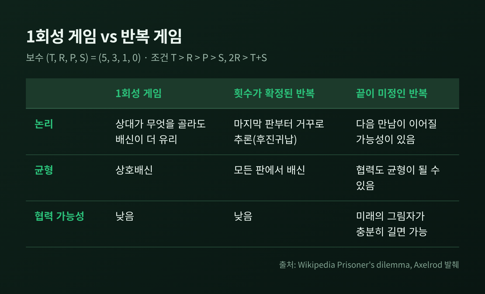
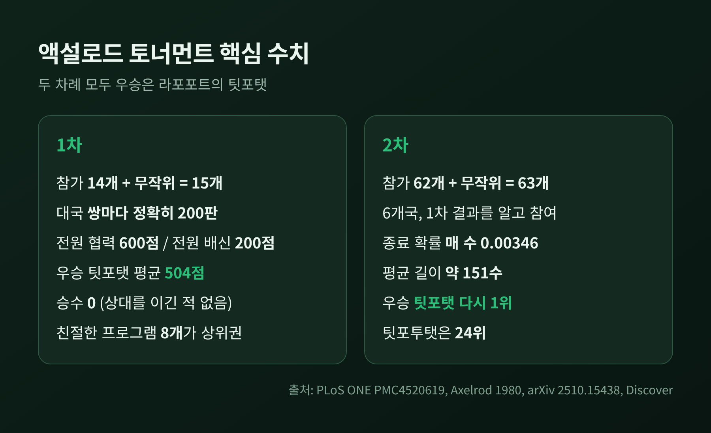
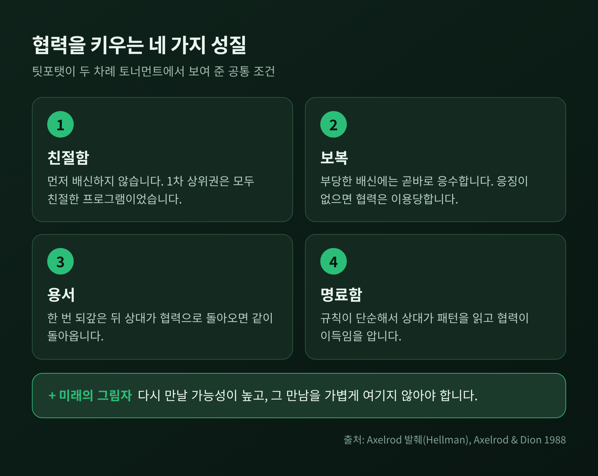
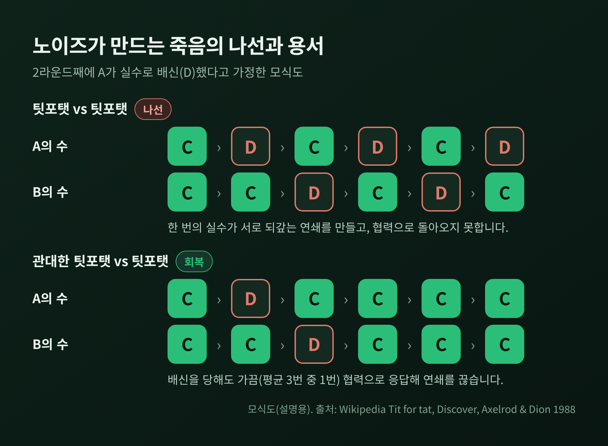
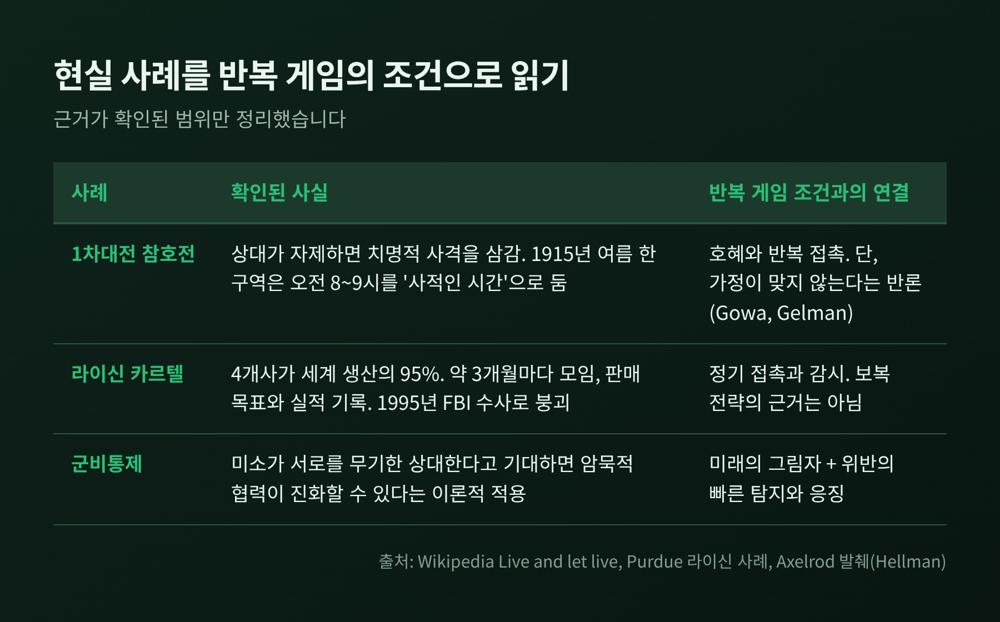

팃포탯 전략, 반복 죄수의 딜레마에서 협력이 자라는 조건

이번 글에서는 반복 죄수의 딜레마와 액설로드의 컴퓨터 토너먼트를 정리해 보겠습니다.
단순한 규칙 하나인 팃포탯(tit-for-tat)이 어떻게 협력을 이끌어내는지, 어떤 조건이 필요한지 살펴봅니다.
마지막에는 실수가 섞인 현실에서 왜 '관대한 팃포탯'이 등장하는지까지 이어가겠습니다.
먼저 결론부터 말씀드리면 이렇습니다.
팃포탯은 첫 수에 협력하고, 이후에는 상대의 직전 수를 그대로 따라 합니다.
이 단순한 규칙이 협력을 키우려면 서로 다시 만날 가능성, 곧 '미래의 그림자'가 충분히 길어야 합니다.
그리고 실수가 있는 세계에서는 보복에 약간의 용서를 더해야 합니다.
1회성 게임과 반복 게임은 무엇이 다른가
죄수의 딜레마는 두 사람이 협력할지 배신할지를 동시에 정하는 게임입니다.
보수는 배신 유혹(T) > 상호협력(R) > 상호배신(P) > 호구(S) 순으로 크고, 2R > T + S 도 성립해야 합니다.
이 조건은 협력과 배신을 번갈아 하는 편이 상호협력보다 유리해지는 일을 막습니다.
액설로드는 (T, R, P, S) = (5, 3, 1, 0)을 썼습니다.
한 번만 하는 게임에서는 상대가 무엇을 고르든 배신이 더 나은 보수를 줍니다.
그래서 상호배신이 유일한 내쉬균형입니다.
횟수가 정해진 유한 반복도 마찬가지입니다. 마지막 판에는 배신이 합리적이고, 그 앞 판도 연쇄적으로 배신이 됩니다.
협력의 문이 열리는 곳은 끝이 정해지지 않은 반복입니다.
라운드 수가 미정이거나 무한해야 협력이 나올 수 있고, 아우만(Aumann)은 1959년 연구에서 이를 보였습니다.
다시 만날 확률이 낮으면 항상 배신이 합리적이고, 충분히 높으면 한 번 당할 위험보다 계속 협력하는 이익이 커집니다.
이 확률이 미래의 그림자입니다.

액설로드의 토너먼트, 숫자로 보면
정치학자 로버트 액설로드는 게임이론가들에게 프로그램을 받아 총당전(라운드 로빈)을 열었습니다.
1차에는 14명이 낸 프로그램과 무작위 전략 하나를 더해 15개가 참가했습니다.
각 쌍은 정확히 200판을 겨뤘고, 내내 협력하면 600점, 내내 배신하면 200점이었습니다.
우승은 아나톨 라포포트가 낸 팃포탯이었습니다.
14개 진짜 프로그램 가운데 가장 단순했고, 평균 504점으로 1위를 차지했습니다.
흥미로운 대목이 있습니다. 이 프로그램은 어떤 상대와의 한 판에서도 상대를 이길 수 없었습니다. 승수는 0이었습니다.
이기는 것이 아니라 함께 점수를 쌓는 방식으로 이겼다는 뜻입니다.
상위권은 모두 먼저 배신하지 않는 '친절한' 프로그램이었습니다.
2차는 규모가 컸습니다.
62개가 제출되어 무작위 전략과 함께 63개가 겨뤘고, 6개국의 컴퓨터 애호가와 여러 분야 교수들이 참여했습니다.
참가자들은 1차 결과를 알고 설계했는데도 이 전략이 다시 우승했습니다.
게임 길이도 바뀌었습니다. 고정 200판 대신 매 수 뒤 0.00346의 확률로 끝나게 해서 평균 길이가 151수 안팎이었습니다.
마지막 판을 미리 알 수 없게 만든 장치입니다.
재현 연구도 있습니다. 2025년에 원본 코드를 그대로 돌린 결과 이 전략이 다시 1위였고, 2만 5천 번 반복한 토너먼트에서는 약 63%를 우승했습니다.
이 말은 뒤집어 보면 약 37%는 다른 전략이 이겼다는 뜻이기도 합니다.

협력을 키우는 네 가지 성질
액설로드는 성적이 좋았던 전략의 공통점을 정리했습니다.
핵심은 네 가지입니다.
첫째, 친절함입니다. 먼저 배신하지 않습니다.
둘째, 보복입니다. 부당한 배신에는 곧바로 응수하고, 협력에는 협력으로 답합니다.
셋째, 용서입니다. 한 번 되갚은 뒤 상대가 협력으로 돌아오면 같이 돌아옵니다.
넷째, 명료함입니다. 규칙이 단순해서 상대가 패턴을 읽고 협력이 이득임을 깨닫습니다.
보복이 왜 필요한지는 팃포투탯(tit for two tats) 사례가 보여 줍니다.
상대가 두 번 연속 배신해야 응수하는 이 너그러운 전략은, 1차에서는 이길 수 있었다는 분석이 있었습니다.
그러나 2차에서는 24위에 그쳤습니다. 한 번씩 건너 배신하는 착취 전략이 등장했기 때문입니다.
친절함만으로는 부족하고, 응징이 없으면 협력은 이용당합니다.
여기에 미래의 그림자가 더해집니다.
액설로드와 디온의 1988년 논문에 따르면, 매 수 뒤 게임이 끝날 확률이 충분히 낮으면 모두가 이 전략을 쓰는 집단이 균형이 되어 혼자 배신하는 쪽이 이득을 보지 못합니다.
다시 만날 가능성이 높고, 그 만남을 가볍게 여기지 않는 것이 전제입니다.

현실의 약점, 노이즈
그런데 현실에는 실수와 오해가 있습니다.
이 규칙을 따르는 두 사람이 협력하던 중 한쪽이 한 번 실수로 배신하면, 상대가 보복하고 다시 이쪽이 보복하는 연쇄가 이어집니다. 이를 '죽음의 나선'이라 부릅니다.
몰랑데르의 분석을 액설로드와 디온이 소개했는데, 잡음이 있으면 이 규칙을 따르는 두 사람은 장기적으로 무작위 두 명의 평균 보수에 머문다고 합니다.
오해 확률이 10%인 토너먼트에서 이 전략은 21개 중 6위였습니다.
해법은 용서를 덧붙이는 것입니다.
관대한 팃포탯(generous tit-for-tat)은 협력에는 협력으로 답하고, 배신을 당하면 대부분 응수하되 가끔은 협력합니다.
디스커버 매거진이 소개한 설명으로는 배신 앞에서 평균 세 번 중 한 번 협력하는 수준입니다. 이 관용의 크기를 '빈의 황금률'이라 부르기도 합니다.
언제 용서할지를 정해 두면 곧 이용당하므로, 3분의 1은 일정이 아니라 평균입니다.
나우악과 지그문트의 1992년 연구는 더 흥미로운 그림을 줍니다.
혼합 집단에서 상호성이 자리 잡으려면 소수의 팃포탯이 반드시 필요하고, 이 규칙은 이후 더 관대한 변형으로 이어집니다.
팃포탯은 진화의 목표가 아니라 '축(pivot)'이라는 표현이 그래서 나옵니다.
소개된 시뮬레이션에서는 초기에 이 전략 사용자를 약 1%만 넣어도 흐름이 배신에서 협력으로 뒤집혔습니다.
다른 대안도 있습니다. 우와 액설로드는 1995년 논문에서 관대함, 참회(contrite), 파블로프 세 가지를 비교했습니다.
관대한 관대한 형태은 잡음에 적응하지 않은 상대에게 잘했고, 참회형은 상대가 적응한 경우 더 잘했습니다. 파블로프는 견고하지 않다고 결론 내렸습니다.
사람 실험도 비슷합니다. 잡음이 있는 무한 반복 게임에서 협력이 가능한 조건의 협력률은 약 49~61%였고, 가장 성공적인 전략은 첫 배신에 관대하고 처벌 뒤 용서하는 쪽이었습니다.
논문은 이를 "불확실한 세상에서는 화를 천천히 내고 빨리 용서하는 것이 이득일 수 있다"고 요약합니다.

현실 사례와 그 한계
참호전이 대표적입니다. 1차대전 서부전선에서 병사들은 상대가 자제하는 한 치명적 사격을 삼가는 암묵적 합의를 만들었습니다.
1915년 여름 한 구역에서는 오전 8시에서 9시를 '사적인 시간'으로 여겼고, 양쪽 저격수는 깃발로 표시된 곳을 피했습니다.
우정 때문이 아니라 서로의 자제를 확인하는 호혜의 결과였습니다. 다만 치명적 폭력 한 번에 쉽게 깨졌고, 전쟁이 길어질수록 더 불안정해졌다고 합니다.
이 해석에는 반론도 있습니다. 조애나 고와와 앤드루 겔먼은 죄수의 딜레마의 가정이 이 사례에 맞지 않는다고 주장합니다.
기업 담합은 어떨까요. 1990년대 초 사료용 라이신 카르텔은 세계 생산의 95%를 가진 네 회사가 만들었습니다.
이들은 약 3개월마다 고위 임원이 모여 가격과 생산 배분을 논의했고, 압수 문서에는 각사의 '판매 목표'와 '실제 판매'가 기록돼 있었습니다. 서로 지키는지 감시한 흔적입니다.
미국 라이신 가격은 1992년 7월 0.64달러에서 카르텔 이후 1달러를 넘는 수준으로 올랐습니다.
다만 이 사례가 보복을 주고받는 그 전략이었다는 근거는 아닙니다. 반복 접촉과 감시가 담합 유지의 뼈대였음을 보여 줄 뿐이고, 결국 1995년 FBI 수사로 무너졌습니다.
이론적으로는 그린과 포터(1984)의 모형이 있습니다.
가격만 관측되는 상황에서 가격이 기준 아래로 떨어지면 일정 기간 경쟁으로 돌아갔다가 카르텔로 복귀하는 구조인데, 수요 충격만으로도 배신 없이 가격전쟁이 벌어집니다. 앞서 본 노이즈 문제와 닮은 구조입니다.
국제 관계에서는 액설로드가 군비경쟁과 위기 협상을 반복 죄수의 딜레마로 모델링했습니다.
미국과 소련이 서로를 무기한 상대할 것이라 기대하면 암묵적 협력이 진화할 수 있고, 위반이 충분히 빨리 탐지되어 응징될 수 있어야 한다는 조건이 붙습니다.
이는 이론적 적용이며, 특정 협상에서 이 전략이 쓰여 성공했다는 사례까지 이번 조사에서 확인하지는 못했습니다.

팃포탯의 한계도 있습니다
예전엔 이 전략을 협력의 정답처럼 읽는 시선이 많았습니다. 지금은 조건부 해답으로 보는 편이 합리적입니다.
만능이라는 결론은 안전하지 않습니다.
2단계 토너먼트로 다시 분석했더니 이 전략의 우승 비율은 11.0%에 그쳤고, 1차 순위는 DO와 GR 두 프로그램이 좌우한 '킹메이커' 효과가 컸다는 연구가 있습니다.
총점 순위와 승수 순위가 상관이 없다는 점, 보수 값에 따라 승자가 달라질 수 있다는 점도 지적됩니다.
참여자가 늘수록 협력이 어려워진다는 한계도 있습니다. 다자 협상이나 여러 나라가 얽힌 카르텔에서는 더 그렇습니다.
따라서 팃포탯은 '언제나 최선의 전략'이 아니라 '협력이 자랄 조건을 보여 주는 가장 선명한 사례'로 읽는 편이 정확합니다.
정리하면 이렇습니다.
협력은 선의에서만 나오지 않고, 다시 만날 구조와 응징의 신뢰와 용서의 여지가 함께 있을 때 자랍니다.
먼저 믿고, 되갚되, 곧 잊는다.
혹시 지금 마음에 걸리는 관계가 있다면, 그 관계에서 다시 만날 일이 얼마나 남았는지부터 헤아려 보시길 권합니다.
저라면 실수가 의심되는 첫 번째 배신 앞에서는, 한 번쯤은 못 본 척 넘어가 보겠습니다.